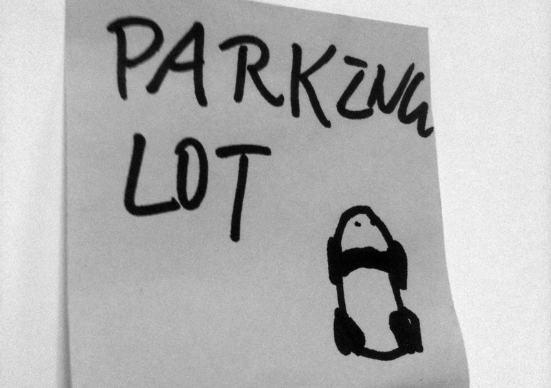

强调沟通和杜绝浪费是敏捷最核心的东西，这两项基本是贯穿我这次咨询活动的主线－任何细微的活动都需要用心审视两个问题：我做这件事情的前提是传递价值给团队另一个人，那么价值的传递过程中有没有沟通的阻碍？价值的传递过程有没有什么东西导致了传递损耗既是浪费？
从一对一沟通谈起，逻辑是你不可能消除所有的沟通壁垒，譬如你的口齿不够清楚，那么至少发现那些你可以消除的壁垒，消除它，并告知和提醒你的听众那些你不能消除的。往往人们犯的错误是：
- 察觉不到那些可能成为沟通壁垒的微小细节；
- 对自己不能消除的壁垒过分乐观；
- 对自己的听众过分乐观；
很多微不足道的东西都可能称为沟通壁垒。传统上，邮件和文档理所当然称为阻隔沟通的最大障碍。文字的修辞不如口头表达直白有效；文字很难达到及时的确认反馈；超过一定数量的文字考验被交流者的耐心；绝大部分的文档撰稿人无法理解文档是一种用户界面的思想，我所看到的情况，大部分的文档达不到可读(readable)的标准。
未曾想到的是，某种不经意的细节也许也能成为沟通的障碍，譬如，某个不及时统一的术语运用，因为小，更容易被听者忽略或者不愿意直接打断；或者某个图省事的英文缩写；或者一个白板上随意的箭头；或者某个夹在在中文里的英文单词。归根结底，任何沟通的承载物都是一种界面(interface)，界面设计种盛行的"Don't make me think"完全应该引入到你的任何一次沟通中来。就跟蹦出个对话框说“对不起，请耐心等待上传结果”的意义跟“对不起，我的普通话不标准，如果有听不清楚的地方，请打断我”一样，都是一种降低使用者（被沟通者）预期的方法，目的都是达到更好的沟通效果。
当然，更重要的是提升自身的沟通技巧。这里面有几种技巧是可以提供帮助的：
学会察觉沟通者的身体语言
据说有60%的沟通依靠身体语言，熟悉几种常见的身体语言和它们背后的故事会有帮助。譬如，说反馈的话却不对着你说而是对别人笑，代表他不确定自己的观点是不是受人支持，希望找到这种支持；双手护胸代表对你的内容有抵触，他有更多自己不同的看法；双手叉腰，虎口对你代表疲倦，虎口对内代表急于表达自己的看法；看着茶杯喝水代表对你说的内容不感兴趣，看着你喝水代表对你说的极感兴趣；低头看你代表不信任，把某一边耳朵倾向你代表很关注你的内容，扬起下巴两指拖着代表关注并思考，等等。
会展现你的观点
画图是最好形成共识的工具，相当于一个美的用户界面。居我观察，A公司的专家没很少有能够干净准确表达自己观点的，共同的问题是，要么就不画，要画也是不知道如何画，最后的结果是白板上什么都不是。因为国人的教育偏究其理而轻表其象，也许这种技能是无法在短时间内获得，但是，根据大熊这个把Parking Lot画成熊猫的同志的经验，画的时候不要着急，画一点是一点，对自己要求严一点没画好的地方擦掉重画。

要持续确认
敏捷最美的地方在于任何活动都遵守敏捷原则，在沟通的过程中需要持续地把各自的理解与对方确认，可以说：我是不是可以这样理解...等等。
要鼓励对方进行沟通而不是制造障碍
譬如，很多人在一个阐述的结尾喜欢加：你明白我什么意思吗？或者，你能理解我的意思吗？等等，这样的话很容易让人在每个“吗”字后面不自觉地加一个“笨蛋”，认为这时候说不明白会有一种羞耻感，因此，更换成：我不知道我是不是表达得很清楚？或者，我会不会说得有点不太明白？会起到更好的效果。
要把已经达成一致的东西展示出来
看！这又是敏捷原则之一－阶段性的showcase，对于不再需要重复已经达成一致的观点，应该及时写出来，因为接下来的某些言论如果是基于一个已经达成一致的观点，风险会降低很多。你可以使用身边的纸笔，最好是白板纪录下这些内容。

（编者按：五年后再看这个会议沟通海报，据说已经变成了文物展出）
关于沟通的问题，也许还有更多的话题可以探讨，更重要的还是实践中的体验。作为ThoughtWorks的面试人员，沟通可是我的第一加分点，一个乐于或者善于沟通的人往往离成功不远，是我最欣赏的品质没有之一。